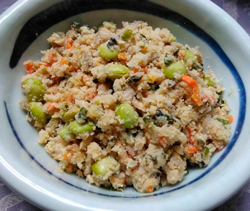

おからの煮物
- 調理時間：30分
- （一人当たり）
- カロリー：292kcal
- たんぱく質：17.8g
- 脂質：13.6g
- 炭水化物：25.2g
- 塩分：1.4g


＜2人分＞
- おから（生）
- 150g
- ・ニンジン
（イチョウ切り） - 1/3本
- ・マイタケ
（粗めのみじん切り） - 1/2パック
- ・枝豆（茹でて皮をむく）
- 80g
- ・コンニャク
（さいの目切り） - 80g
- ・鶏肉
（小さめの一口サイズ） - 80g
A
- 長ネギ（小口切り）
- 1/2本
- 生姜汁
- 1片
- ・だし汁
- 150～200ml
- ・薄口醤油
- 大さじ1
- ・みりん
- 大さじ1
- ゴマ油
- 少々
B


- 食材は、それぞれ切って、下準備する。
- 鍋にAの食材とBを入れる。
（鍋はひたひたの水分が望ましいので、足らなければ水を足す）
火にかけてサッと煮る。煮えたら、ザルにあげてだし汁と食材に分ける。 - フライパンにゴマ油を熱し、おからを加えて中火で炒める。
だし汁で煮た②の野菜類を加えてさらに炒める。 - 全体に油が回ったら、②のだし汁を少しずつ加えて、水分がなくなるまで炒め煮る。
- 仕上げに小口切りのネギと生姜汁を加え、全体を混ぜ合わせて完成。
おからの煮物
おからは「卯の花」と呼ばれることもありますが、これは空木(うつぎ)という植物の花が白くて小さくて、おからにとても似ていたためだと言われています。その「おから」は豆乳を作る際に絞った大豆の残りかすですが、食物繊維や大豆イソフラボン、サポニンなどが豊富で、美肌効果や貧血予防など、女性に嬉しい成分が豊富です。数年前はダイエットや腸活に効果があると、パウダー状のおからもブームになりました。生も乾燥も、意外と簡単に扱えますので、おから料理、おススメです。